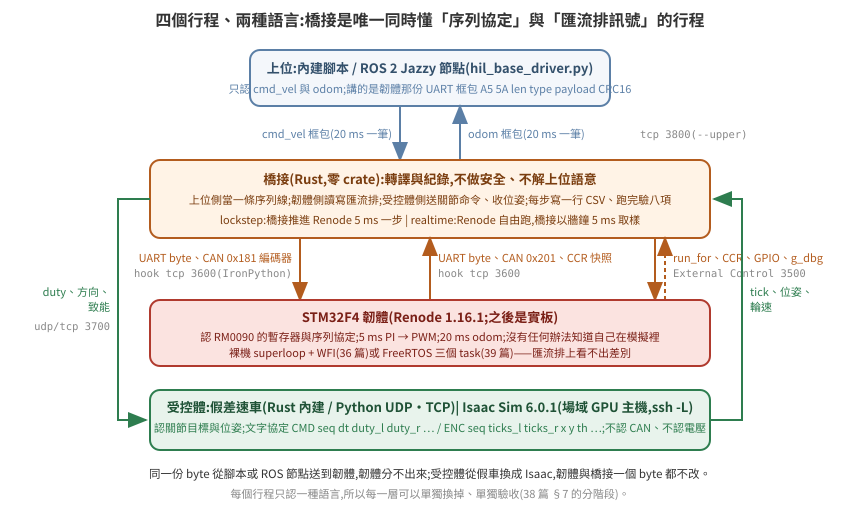
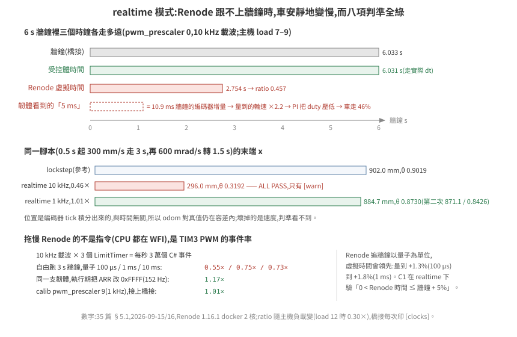

35 · HIL 是什麼,為什麼硬體要放在下位
把 Isaac Sim 裡的車開起來,最省事的做法是一段 Python:收 cmd_vel,算差速運動學,直接設兩個輪關節的速度。這在做場景、路網、多車調度時夠用。但它把一整層東西理想化掉了——真實車上,cmd_vel 到輪子之間有一顆 MCU:它解析協定、驗 CRC、限幅、跑 PI、發 PWM、讀編碼器、在沒命令 500 ms 後自己停車。這一層的錯誤,純運動學版本永遠不會遇到。
HIL(hardware-in-the-loop)就是把那顆 MCU 放回迴路裡:它跑真的韌體、講真的匯流排協定;Isaac Sim 只負責「馬達轉了會怎樣」。這一篇講它是什麼、跟 NVIDIA 課程裡的 HIL 差在哪、以及一旦迴路裡有三個時鐘,什麼事會變得不一樣。
驗證狀態:本篇的拓撲、時鐘與規則來自 36–39 篇實測的那套系統(Renode 1.16.1 上的 STM32F4 韌體 + Rust 橋接 + 假受控體,docker,2026-09-15/16)。§5 的數字是實跑值。Isaac Sim 6.0.1 受控體在場域 GPU 主機實測,數字在 38 篇 §6;ROS 2 Jazzy 上位在 38 篇 §6.1。
1. 三個詞:MIL、SIL、HIL
| 縮寫 | 迴路裡的「控制器」是什麼 | 迴路裡的「受控體」是什麼 |
|---|---|---|
| MIL(model-in-the-loop) | 控制律的數學模型(方塊圖) | 受控體模型 |
| SIL(software-in-the-loop) | 編譯出來的控制程式,跑在開發機上 | 受控體模型 |
| HIL(hardware-in-the-loop) | 目標硬體上的真韌體 | 受控體模型(即時的) |
三者的差別只在「控制器那一格放什麼」。HIL 的價值是控制器那一格跟上車的是同一個東西:同一份二進位、同一個時序、同一組週邊暫存器。
這一區的做法是 HIL 的純軟體變體:STM32F4 跑在 Renode 模擬器裡。跟 SIL 的差別在於韌體沒有重新編譯給開發機——Renode 執行的是給 Cortex-M4 的同一份 ELF,週邊也是同一組暫存器位址。跟真 HIL 的差別在於週邊是模型不是矽,而模型的深度要自己驗(36 篇 §3);時序也不算數(§7)。
2. 跟 NVIDIA 課程那個 HIL 的差別
NVIDIA 的 Leveraging ROS 2 and HIL in Isaac Sim(Getting Started with Isaac Sim 系列)講的是:工作站跑 Isaac Sim(場景、車、車上相機),Jetson 跑 Isaac ROS 的影像分割,兩邊靠乙太網路 + ROS 2 對接。迴路裡的硬體是運算平台,沒有 MCU。
| NVIDIA 課程 | 這一區 | |
|---|---|---|
| 迴路裡的實體 | Jetson(上位運算平台) | STM32(下位控制器) |
| 硬體跑什麼 | 感知(分割網路) | 底盤韌體:協定、限幅、安全迴路、輪速控制 |
| 硬體 ↔ Isaac 的介面 | 一個:ROS 2 topic(影像進、結果出) | 兩個:上位側 ROS 2 或序列協定;受控體側是匯流排訊號(CAN / GPIO / PWM),要經橋接轉成關節命令 |
| 時鐘 | 全部牆鐘 | 三個時鐘域(§5) |
| 借用 | ROS 2 當膠、Isaac 當受控體與感測器來源 | 同 |
| 不借用 | — | 感知堆疊、Jetson |
兩者不衝突,是同一輛車的兩層。課程沒涵蓋 MCU 這一層,匯流排層的橋接是自己的事——這一區就是那件事。
3. 為什麼值得:純運動學版本看不到的東西
下位機韌體裡有五類邏輯,Python 運動學一條都沒有:
- 協定與 CRC:壞框包要被拒、不能半解析。38 篇 §2 的負對照就是把每個命令的 CRC 弄壞,看韌體擋不擋。
- 安全閘門:沒命令 500 ms 要停、急停腳拉高要停、驅動器報錯要停、輪子卡住要停、撞到東西要拒絕前進、上位心跳斷了要降速,韌體自己死了要有看門狗把整顆重置——而且停的動作要發生在 PWM 與致能腳上,不是只改一個旗標。每一道閘都有一個能讓它失效的負對照(38 篇 §1.2):韌體死掉而看門狗沒開時,馬達用最後的 duty 轉了 4 s,車跑出 1.6 m。
- 閉環控制:PI 的積分要在停車時清空,否則下次起步會衝。
- 動態限制:上位發的
cmd_vel是階躍,把它變成斜坡是下位的事。沒有斜坡時 PI 把 duty 一步拉滿,車的加速度只剩馬達層在限——假受控體量到 9300 mm/s²,Isaac 的DriveAPI直接吃 duty 時 91400、超調 60%;加了斜坡與馬達層之後兩者都在 1900 以下、超調 3%(38 篇 §1.1)。 - 時序:5 ms 控制、20 ms 回報、1 ms tick——這些在真 MCU 上互相搶 CPU。
這五類的失敗形狀都是「上層看起來正常,車的行為不對」。放進迴路之後,它們會在 Isaac 裡以車的動作表現出來,而不是要等到實車。
4. 拓撲:每個行程只認一種語言

| 行程 | 認什麼 | 不認什麼 |
|---|---|---|
| 上位 | cmd_vel、odom、/scan(雷射接上位不接底盤板) |
CAN、PWM、關節 |
| 韌體 | 序列協定;CAN / GPIO / PWM 暫存器 | 「自己在模擬裡」——它沒有任何辦法知道 |
| 橋接 | 匯流排上的 byte 與腳位;受控體的關節命令與狀態 | 上位的語意、車的動力學細節 |
| 受控體 | 關節目標、關節狀態、位姿 | CAN、電壓、任何車體協定 |
橋接是唯一同時懂兩邊的行程,所以它是這一區的主要新工件(37 篇)。它的責任刻意窄:轉譯與紀錄。上位換過三次——腳本、ROS 2 方形 client、Nav2——韌體與橋接的位元組一個都沒改(38 篇 §6.1、§6.2)。
5. 三個時鐘域
| 時鐘 | 誰的 | 特性 |
|---|---|---|
| 牆鐘 | 上位、橋接、作業系統 | 真實時間 |
| Renode 虛擬時間 | 韌體 | 由指令數換算(PerformanceInMips),主機忙時落後牆鐘;可以被外部推進 |
| Isaac 模擬時間 | 物理 | 手動步進,每步固定 dt;real-time factor 看 GPU 與渲染 |
29 篇 §2 講的是後兩者之間的分歧;HIL 多了第一個。三個時鐘各自跑的話,「韌體 5 ms 控制一次」與「Isaac 5 ms 物理一步」之間沒有任何東西保證對齊。
兩種運作模式,同一套橋接:
| 模式 | 做法 | 用在 |
|---|---|---|
realtime |
三個時鐘各自跑,橋接只做轉譯:每 5 ms 牆鐘取樣一次、注入一次(§5.1) | 實板 HIL、Nav2 在迴路裡 |
lockstep |
橋接當節拍器:推進 Renode Δt → 交換匯流排訊號 → 受控體走 Δt → 回填感測器 → 重複 | CI:同一份輸入跑兩次要一模一樣 |
lockstep 這一區實測做到了,數字如下(Renode 1.16.1,PerformanceInMips=100 + 韌體 WFI,假受控體,docker 2 核):
- 6 s 腳本 = 1200 步 × 5 ms:主機另有負載(load ≈ 4/14)時牆鐘 35.5 s,每步 29.6 ms,0.17× 實時;主機閒時每步 8–13 ms
- Renode 虛擬時間結束於 6,000,000 µs 整,與 1200 × 5000 分毫不差
- 同一腳本跑兩次,1201 行 CSV 逐 byte 相同
- 受控體換成 Isaac Sim 6.0.1(在另一台 GPU 主機,經
ssh -L):每步 52 ms,0.10× 實時;odom 對真值 3.4 mm / 0.028 rad;兩次 CSV 同樣逐 byte 相同(CPU 求解)
前提是所有注入都要等到「確實進了週邊」才推進時間——沒有這個 ack,同一份輸入會因為執行緒排程而落在不同的步,決定性就沒了(37 篇 §3)。
lockstep 還有一個固有性質:一步延遲。第 k 步結束時注入的編碼器訊框,韌體在第 k+1 步的 run_for 裡才讀到。這跟真實匯流排的延遲同形,但要寫進判準(38 篇 C8 的 steps − 1)。
5.1 realtime 實測:三個時鐘真的分開時會怎樣
同一套橋接加 --mode realtime:橋接先叫 Renode start,之後每 5 ms 牆鐘取樣一次匯流排、注入一次編碼器;受控體走的是「真的過了多久」;Renode 自己按它的節拍追牆鐘。三個時鐘的分歧量在跑完印成一行:
[clocks] wall=6.005s renode=6.081s plant=6.003s renode/wall=1.013 max_lag(wall-renode)=4.0 ms

Renode 能不能跟上牆鐘,取決於週邊事件率,不是指令數。 這支韌體 CPU 幾乎都睡在 WFI,拖慢模擬的是 TIM3 的 PWM:平台描述給 TIM3 10 MHz、ARR 999 → 10 kHz 載波,三個 LimitTimer(計數器 + 兩個比較通道)每秒 3 萬個 C# 事件。用 renode/perf_freerun.resc(start → 主機睡 3 s → 讀虛擬時間)量,沒有橋接:
| PWM 載波 | 同步量子 100 µs(Renode 預設) | 量子 1 ms | 量子 10 ms |
|---|---|---|---|
10 kHz(pwm_prescaler 0) |
0.55× | 0.75× | 0.73× |
| 152 Hz(執行期把 ARR 改 0xFFFF) | — | 1.17× | — |
接上橋接(每 5 ms 牆鐘 6 個 External Control 讀取 + hook 三次往返)再量,6 s 預設腳本(主機 14 核、當時 load 7–9;同一設定在 load 12 時量到 0.30×——這個比值是主機當下的狀態,不是常數,所以橋接每次都印):
| PWM 載波 | 量子 | renode/wall | 末端位姿 plant(x, y, θ) | 對 lockstep 的差 |
|---|---|---|---|---|
| lockstep(參考;這張表是第一版韌體,無斜坡。現行 calib 的參考值是 900.8, 0.4, 0.8627,38 篇 §1) | 100 µs | — | 902.0, −0.9, 0.9019 | — |
| 10 kHz | 100 µs | 0.46 | 296.0, −2.1, 0.3192 | 走了 1/3 |
1 kHz(pwm_prescaler 9),五次 |
100 µs | 1.01–1.02 | x 777–885,θ 0.730–0.873 | 17–125 mm、0.03–0.17 rad |
三個結論:
- 模擬器跟不上時,閉環速度會低到 ratio 倍,而一致性判準全部綠。 0.46× 那一列
ALL PASS(C1–C8):odom 與 plant 一致(位置是 tick 積分出來的,跟時間無關)、CAN 與 CCR 一致、CRC 全對。壞掉的是速度:韌體每「5 ms」看到的是 11 ms 牆鐘的編碼器增量,量測速度膨脹 2.2 倍,PI 把 duty 壓下去,車就以 46% 的速度走。判準驗的是一致性,抓不到這件事,所以橋接在 ratio < 0.9 時另外印[warn]。§7 說時序只有實板算數;這一列補上另一半:純軟體 HIL 的時序錯的時候,沒有任何訊號。 - Renode 的實時節拍不是硬的。 它以量子為單位追牆鐘,虛擬時間可以領先:量到 +1.3%(量子 100 µs)到 +1.8%(1 ms)。C1 在 realtime 模式下改驗「0 < Renode 時間 ≤ 牆鐘 + 5%」,放的就是這個量。
- 決定性沒了,而且差多少由主機決定。 同一腳本五次 realtime,末端 x 在 777–885 之間、θ 在 0.730–0.873,CSV 的
ccr1在 995/1200 步不同。差的來源拆開看(每步的牆鐘時刻現在寫進 CSV 的wall_ms):橋接每步要ec_read1.8 ms + hook 2.4 ms,在 load 6–8 的主機上守不住 5 ms 的節拍——驅動段平均步距 4.8–5.3 ms、最長停頓 50 ms、整趟 6.0–6.6 s 牆鐘。編碼器訊框跟著步走,韌體的速度迴路吃到的是這個節拍:步距 5.3 ms 那一趟平均車速只有 259 mm/s(命令 300),x 777;步距 4.8 ms 那一趟 277 mm/s,x 830。末端差與節拍品質同向,不是隨機。兩件事已經改掉:realtime 的腳本時間軸改用牆鐘(原本用步數,橋接追進度時命令被壓短,轉向段量到 1.459 s 而不是 1.5 s);韌體的輪速改以「收到幾筆訊框」為時間基準而不是「過了幾個控制週期」(某個週期 0 筆或 2 筆時量測不再是 0 或兩倍;lockstep 的數字逐字不變)。最後一項是訊框本身沒有時間戳——韌體只能假設每筆代表 5 ms。收法是把編碼器改成真板的樣子:TIM encoder mode,韌體在自己的 5 ms tick 讀 CNT(36 篇 §3.1)。改完之後 realtime 同腳本三次的末端 x = 902 × 驅動段的 Renode/牆鐘比(預測 883 / 771 / 665,實測 876 / 766 / 668),θ 同理——差全部在時鐘比裡:速度迴路活在 Renode 時間,受控體活在牆鐘,閉環速度 = 設定點 × 兩者的比。要決定性就回lockstep;要牆鐘就把[clocks]的比一起報,而且要分段報(驅動段與轉向段的比不同)。 - 驗物理量的判準抓得到節拍停頓。 韌體加了斜坡之後多一項 C9「受控體輪加速度 ≤ 斜坡上限 × 1.2」(38 篇 §1.1)。同一天稍晚主機 load 9–11(另有兩個 Renode 容器各佔一核)再跑 realtime,10 kHz 與 1 kHz 載波都只到 0.33–0.43×,六次 C9 全紅:一次 50 ms 的停頓讓韌體在一個 5 ms 步裡看到十步份的 tick(量測 153 → 337 mm/s),PI 把 duty 從 248 打到 63,受控體的減速撞到馬達層 3000 mm/s² 的上限。紅的是停頓不是比值——均勻的 0.35× 只會讓車慢(第 1 點),不會讓 PI 打到上限(推論,這台主機當下量不到均勻的慢)。一致性判準對時序盲,物理量判準不是;但它紅的時候要回
wall_ms欄看是哪一步停了,不是先懷疑斜坡。
pwm_prescaler 進了 calib.json,預設 0(10 kHz,與前面所有 lockstep 數字同條件);lockstep 的末端位姿在 0 與 9 兩個值下逐字相同(duty = CCR/(ARR+1),載波不影響),所以這個旋鈕只改模擬器的負擔。實板上載波要看驅動器,不是看模擬器跑不跑得動——這是兩個不同的理由,不要混。
6. 三條規則
這三條是設計決定,不是最佳實務建議。違反任何一條,HIL 的結論就不再是「韌體的行為」。
韌體沒有「模擬模式」。 同一個二進位在 Renode、實板、實車上跑,差別只在匯流排另一端接什麼。任何 #ifdef SIM 或「偵測到在模擬裡就跳過」都讓 HIL 驗的變成另一支韌體。這一區的韌體(36 篇)連鮑率與 CAN 位元時序都照真硬體寫,Renode 不看那些值也照寫。
橋接不做安全。 不夾限、不逾時、不幫忙停車。安全是韌體要證明的事;橋接一聰明,韌體的缺陷就被蓋住——23 篇講的捷徑,換一個位置再出現一次。橋接可以記錄一切,不能干預。
每一輪要有生效證明。 開跑時印一行:Renode 位址、韌體符號位址與 magic、受控體是哪一個、步長、腳本、負對照模式、ARR 讀回值對 calib——每個變數都要有一行證明它進了系統。這一區的橋接把它印在 [effect] 開頭的四行裡(38 篇 §1)。
7. 誠實標註:純軟體 HIL 的邊界
- 時序不算數。 Renode 的虛擬時間由指令數換算,中斷延遲、匯流排仲裁、DMA 競爭都不是實測值。最壞往返延遲與安全迴路的抖動只有實板算數。
- 週邊是模型。 「Renode 有這個型別」與「這個型別對你的韌體夠用」是兩件事,36 篇 §3 有一張逐項驗過的表——包括一個計數週期差 1 的 timer。
- 受控體是模型。 假受控體是一階馬達 + 精確運動學;Isaac 的接觸力學多出滑移(這一區實測轉向 3.1%、直行 0.5%,32 篇的 2~3% 同量級),容差跟著放。
- Isaac 側的車是教學用的簡化車。 Mesh 盒底盤 + 球形輪 + 球關節腳輪,不是真車資產;它證明的是「迴路接得通、判準抓得到」,不是某台車的動力學。GPU 求解沒測。
8. 檢查清單
- [ ] 說得出迴路裡的「硬體」是上位還是下位,以及它跑的是哪一層邏輯
- [ ] 每個行程只認一種語言;橋接是唯一同時懂兩邊的
- [ ] 三個時鐘各是誰的,以及現在用
realtime還是lockstep - [ ]
lockstep的注入有 ack,決定性用「同一輸入跑兩次逐 byte 比」驗過 - [ ] 韌體裡沒有任何「在模擬裡」的分支
- [ ] 橋接不夾限、不逾時、不停車
- [ ] 每一輪的生效證明印得出來
- [ ] 報告裡標明哪些數字是虛擬時間、哪些要等實板
延伸閱讀:36 STM32F4 韌體在 Renode 上開機、37 匯流排訊號串接、38 驗收與失敗形態、29 長跑才會浮現的兩件事、23 物理模擬不可以偷懶。